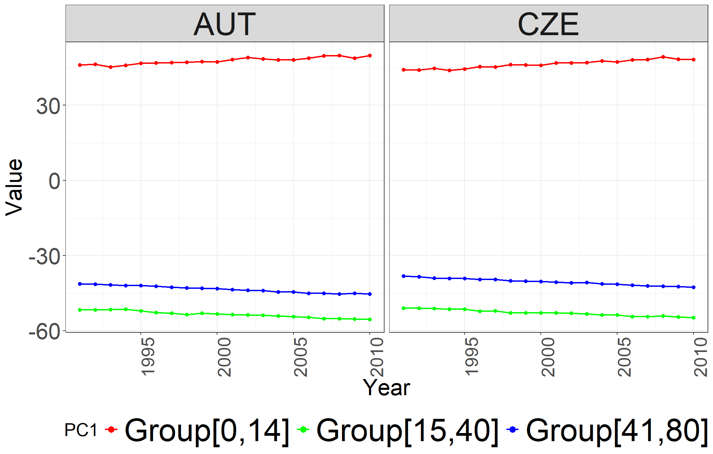
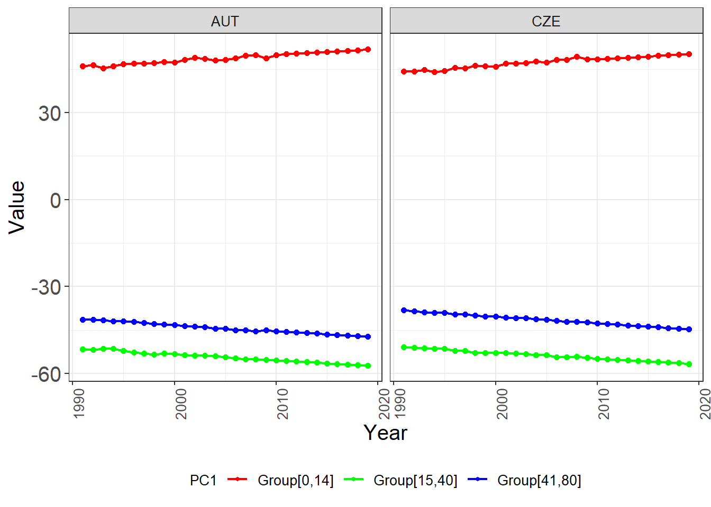

library(dplyr) # Data manipulation and transformation
library(ggplot2) # Data visualization
library(tidyverse) # Collection of tidyverse packages
library(forecast) # Time series forecasting
library(geepack) # Generalized Estimating Equation PackageForecasting Mortality Rates: A Stochastic PCA-GEE Model
Abstract
Principal Component Analysis (PCA) is a widely used technique in exploratory data analysis, visualization, and data preprocessing, leveraging the concept of variance to identify key dimensions in datasets. In this study, we focus on the first principal component, which represents the direction maximizing the variance of projected data. We extend the application of PCA by treating its first principal component as a covariate and integrating it with Generalized Estimating Equations (GEE) for analyzing age-specific death rates (ASDRs) in longitudinal datasets. GEE models are chosen for their robustness in handling correlated data, particularly suited for situations where traditional models assume independence among observations, which may not hold true in longitudinal data. We propose distinct GEE models tailored for single and multipopulation ASDRs, accommodating various correlation structures such as independence, AR(1), and exchangeable, thus offering a comprehensive evaluation of model efficiency. Our study critically evaluates the strengths and limitations of GEE models in mortality forecasting, providing empirical evidence through detailed model specifications and practical illustrations. We compare the forecast accuracy of our PCA-GEE approach with the Li-Lee (LL) and Lee-Carter (LC) models, demonstrating its superior predictive performance. Our findings contribute to an enhanced understanding of the nuanced capabilities of GEE models in mortality rate prediction, highlighting the potential of integrating PCA with GEE for improved forecasting accuracy and reliability.
Keywords: Mortality forecasting, Longitudinal analysis, Generalized estimating equations, Principal component analysis, Random walks with drift.
For more details, refer to the related paper: Forecasting Mortality Rates: A Stochastic PCA-GEE Model:
Affiliation
Department of Mathematics and Statistics, Masaryk University, Kotlářská 2, 611 37 Brno, Czech Republic
Load packages
First, load the packages to be used
Dataset
Importing the dataset containing log(q_{cgxt}) values for males and females from AUT (Austria) and CZE (Czech Republic)
List of Dataset Filenames
# log(q_{cgxt}) values for the years 1991 to 2019
load("dat.RData")
# log(q_{cgxt}) values for the years 1991 to 2010
load("dattrn.RData")M0 <- dat
MB0 <- do.call(cbind, M0)
t <- 20
M <- dattrn
MB <- do.call(cbind, M)Construction of ASDRs DataFrame for Training Set
# Initialize vectors for training set
t <- 20
# Initialize an empty list 'kcList' to store the individual elements of kc
kcList <- list()
# Iterate through specific pairs of matrices in the list 'M'
# This loop runs for i = 1 and i = 3, thus iterating through the 1st-2nd and 3rd-4th matrices in M
for (i in c(1, 3)) {
# Extract the matrices corresponding to the current pair
matrix1 <- M[[i]] # Get the i-th matrix from M
matrix2 <- M[[i + 1]] # Get the (i+1)-th matrix from M
# Perform principal component analysis (PCA) on the first 15 columns of the combined matrices
# Then repeat the first principal component (PC1) 15 times
result1 <- rep(
prcomp(cbind(matrix1[, 1:15], matrix2[, 1:15]), center = FALSE, scale. = FALSE)$x[, 1],
times = 15
)
# Perform PCA on the columns 16 to 41 of the combined matrices
# Then repeat the first principal component (PC1) 26 times
result2 <- rep(
prcomp(cbind(matrix1[, 16:41], matrix2[, 16:41]), center = FALSE, scale. = FALSE)$x[, 1],
times = 26
)
# Perform PCA on the columns 42 to 81 of the combined matrices
# Then repeat the first principal component (PC1) 40 times
result3 <- rep(
prcomp(cbind(matrix1[, 42:81], matrix2[, 42:81]), center = FALSE, scale. = FALSE)$x[, 1],
times = 40
)
# Combine the repeated principal component results into a single vector
combined_results <- c(result1, result2, result3)
# Repeat the combined results 2 times and append them to 'kcList'
kcList <- c(kcList, rep(combined_results, 2))
}
# Flatten 'kcList' into a single vector 'kc1'
kc1 <- unlist(kcList)
# Create a new vector 'kc2' by squaring each element in 'kc1'
kc2 <- kc1^2
# Define age groups for the 'yngold0' vector
yngold0 <- c("Group[0,14]", "Group[15,40]", "Group[41,80]")
# Create a repeated sequence for 'yngold' with specified age groups
# The repetition pattern is based on the number of observations (t) in each age group
yngold <- rep(
c(
rep("Group[0,14]", t * 15), # Repeat "Group[0,14]" t * 15 times
rep("Group[15,40]", t * 26), # Repeat "Group[15,40]" t * 26 times
rep("Group[41,80]", t * 40) # Repeat "Group[41,80]" t * 40 times
),
4 # Repeat the entire pattern 4 times
)
# Create a vector for 'gender' with alternating repetitions of "Female" and "Male"
gender <- rep(c("Female", "Male"), each = t * 81, times = 2)
# Create a vector for 'Country' with repetitions of "AUT" and "CZE"
Country <- rep(c("AUT", "CZE"), each = t * 81 * 2)
# Initialize vectors for the training set
# 'year' is repeated for each observation in the dataset
year <- rep(1991:2010, times = 4 * 81)
# Define levels for 'age' factor from 0 to 80
age_levels <- factor(0:80)
# Create 'age' vector by repeating age values across all observations
age <- rep(0:80, each = t, times = 4)
# Calculate 'cohort' by subtracting age from year
cohort <- year - age
# Combine all vectors into a data frame called 'ASDRs' for the training set
ASDRs <- data.frame(
kc1, kc2, # Variables 'kc1' and 'kc2' from previous calculations
cohort, # Cohort calculated above
y = as.vector(MB), # Response variable 'y', converted to a vector
age, # Age vector
gender, # Gender vector
Country, # Country vector
year, # Year vector
yngold, # Age group vector
stringsAsFactors = FALSE # Do not automatically convert strings to factors
)
# Convert 'age' to a factor with specified levels
ASDRs$age <- factor(ASDRs$age, levels = age_levels)
# Convert 'age' to numeric for a separate variable 'agenum'
ASDRs$agenum <- as.numeric(ASDRs$age)
# Convert 'gender' and 'Country' to factors with specified levels
ASDRs$gender <- factor(ASDRs$gender, levels = c("Female", "Male"))
ASDRs$Country <- factor(ASDRs$Country, levels = c("AUT", "CZE"))
# Create a 'subject' variable by interacting 'Country', 'gender', and 'age'
ASDRs$subject <- interaction(ASDRs$Country, ASDRs$gender, ASDRs$age)# Display the structure of the resulting data frame to check the data types and structure
str(ASDRs)'data.frame': 6480 obs. of 11 variables:
$ kc1 : num 46 46.3 45.3 46 46.7 ...
$ kc2 : num 2118 2145 2051 2117 2184 ...
$ cohort : int 1991 1992 1993 1994 1995 1996 1997 1998 1999 2000 ...
$ y : num -5.01 -5.03 -5.18 -5.2 -5.33 ...
$ age : Factor w/ 81 levels "0","1","2","3",..: 1 1 1 1 1 1 1 1 1 1 ...
$ gender : Factor w/ 2 levels "Female","Male": 1 1 1 1 1 1 1 1 1 1 ...
$ Country: Factor w/ 2 levels "AUT","CZE": 1 1 1 1 1 1 1 1 1 1 ...
$ year : int 1991 1992 1993 1994 1995 1996 1997 1998 1999 2000 ...
$ yngold : chr "Group[0,14]" "Group[0,14]" "Group[0,14]" "Group[0,14]" ...
$ agenum : num 1 1 1 1 1 1 1 1 1 1 ...
$ subject: Factor w/ 324 levels "AUT.Female.0",..: 1 1 1 1 1 1 1 1 1 1 ...# Display the first few rows of the resulting data frame to inspect the data
head(ASDRs) kc1 kc2 cohort y age gender Country year yngold agenum
1 46.02698 2118.483 1991 -5.007169 0 Female AUT 1991 Group[0,14] 1
2 46.31294 2144.888 1992 -5.033727 0 Female AUT 1992 Group[0,14] 1
3 45.28995 2051.179 1993 -5.184065 0 Female AUT 1993 Group[0,14] 1
4 46.00825 2116.759 1994 -5.196172 0 Female AUT 1994 Group[0,14] 1
5 46.73129 2183.814 1995 -5.332980 0 Female AUT 1995 Group[0,14] 1
6 46.91257 2200.789 1996 -5.332367 0 Female AUT 1996 Group[0,14] 1
subject
1 AUT.Female.0
2 AUT.Female.0
3 AUT.Female.0
4 AUT.Female.0
5 AUT.Female.0
6 AUT.Female.0Plot of \(k_{ct}\)
# Create a new data frame 'ASDRsnw' by converting the 'year' column to numeric
ASDRsnw <- ASDRs %>%
mutate(year = as.numeric(as.character(year)))
# Rename the 9th column to "PC1"
colnames(ASDRsnw)[9] <- "PC1"
# Generate a ggplot with points and lines
ggplot(ASDRsnw) +
# Add points to the plot with year on the x-axis, kc1 on the y-axis, and color based on 'PC1'
geom_point(aes(x = year, y = kc1, color = PC1), size = 1.6) +
# Add lines to the plot connecting the points with the same x and y aesthetics
geom_line(aes(x = year, y = kc1, color = PC1), linewidth = .8) +
# Manually set the colors for the 'PC1' groups
scale_color_manual(values = c("Group[0,14]" = "red", "Group[15,40]" = "green", "Group[41,80]" = "blue")) +
# Set the labels for the x and y axes
xlab("Year") +
ylab("Value") +
# Create a facet grid for the plot by 'Country'
facet_grid(~Country) +
# Apply a clean, white background theme to the plot
theme_bw() +
# Customize the legend to have larger points
guides(color = guide_legend(override.aes = list(size = 3))) +
# Rotate the x-axis text labels to be vertical and adjust their alignment
theme(axis.text.x = element_text(angle = 90, hjust = 1)) +
# Set the font size of the x-axis text labels
theme(axis.text.x = element_text(size = 20)) +
# Set the font size of the y-axis text labels
theme(axis.text.y = element_text(size = 25)) +
# Set the font size of the legend text
theme(legend.text = element_text(size = 35)) +
# Set the font size of the axis titles
theme(axis.title = element_text(size = 25)) +
# Set the font size of the strip text (facet labels)
theme(strip.text = element_text(size = 35)) +
# Set the font size of the legend title
theme(legend.title = element_text(size = 20)) +
# Position the legend at the bottom of the plot
theme(legend.position = "bottom")
Fitting Three GEE Models using the geeglm Function
# Fit a Generalized Estimating Equations (GEE) model using the geeglm function
# The model predicts the response variable 'y' based on:
# - 'gender', 'age'
# - Interaction terms: 'gender:age:kc1' and 'gender:age:kc2'
# - 'cohort'
# The model uses an independence correlation structure (corstr = "independence")
# 'id' specifies the grouping factor for repeated measures, here it is 'subject'
# 'waves' specifies the time points for each subject, here it is 'year'
# 'weights' are used to adjust the importance of observations, based on 'agenum'
geeInd <- geeglm(
y ~ gender + age +
gender:age:kc1 +
gender:age:kc2 +
cohort,
data = ASDRs, # Data frame containing the variables
id = subject, # Grouping factor for repeated measures
waves = year, # Time variable for repeated measures
corstr = "independence", # Independence correlation structure
weights = agenum / mean(agenum) # Weights based on 'agenum' normalized by its mean
)
# Display the fitted GEE model object
# geeInd
# Extract and display the coefficients from the GEE model
# coef(geeInd)
# Extract and display the variance-covariance matrix of the estimated coefficients
# vcov(geeInd)
# Display a detailed summary of the GEE model, including coefficients, standard errors, z-values, and p-values
#summary(geeInd)
# Extract and display the coefficients along with their summary statistics (standard errors, z-values, and p-values)
#coef(summary(geeInd))
# Perform an ANOVA (Analysis of Variance) on the fitted GEE model
anova(geeInd)Analysis of 'Wald statistic' Table
Model: gaussian, link: identity
Response: y
Terms added sequentially (first to last)
Df X2 P(>|Chi|)
gender 1 13.7 0.0002153 ***
age 80 27807.1 < 2.2e-16 ***
cohort 1 5455.9 < 2.2e-16 ***
gender:age:kc1 162 28607.2 < 2.2e-16 ***
gender:age:kc2 162 31535.7 < 2.2e-16 ***
---
Signif. codes: 0 '***' 0.001 '**' 0.01 '*' 0.05 '.' 0.1 ' ' 1# Fit GEE model with exchangeable correlation structure
geeEx <- geeglm(
y ~ gender + age +
gender:age:kc1 +
gender:age:kc2 +
cohort,
data = ASDRs, # Data frame containing the variables
id = subject, # Grouping factor for repeated measures
waves = year, # Time variable for repeated measures
corstr = "exchangeable", # Exchangeable correlation structure
weights = agenum / mean(agenum) # Weights based on 'agenum' normalized by its mean
)
# Display the fitted GEE model object
#geeEx
# Extract and display the coefficients from the GEE model
#coef(geeEx)
# Extract and display the variance-covariance matrix of the estimated coefficients
#vcov(geeEx)
# Display a detailed summary of the GEE model, including coefficients, standard errors, z-values, and p-values
#summary(geeEx)
# Extract and display the coefficients along with their summary statistics (standard errors, z-values, and p-values)
#coef(summary(geeEx))
# Perform an ANOVA (Analysis of Variance) on the fitted GEE model
anova(geeEx)Analysis of 'Wald statistic' Table
Model: gaussian, link: identity
Response: y
Terms added sequentially (first to last)
Df X2 P(>|Chi|)
gender 1 13.7 0.0002153 ***
age 80 27807.1 < 2.2e-16 ***
cohort 1 5455.9 < 2.2e-16 ***
gender:age:kc1 162 22357.9 < 2.2e-16 ***
gender:age:kc2 162 8824.8 < 2.2e-16 ***
---
Signif. codes: 0 '***' 0.001 '**' 0.01 '*' 0.05 '.' 0.1 ' ' 1# Fit GEE model with AR(1) correlation structure
geeAr1 <- geeglm(
y ~ gender + age +
gender:age:kc1 +
gender:age:kc2 +
cohort,
data = ASDRs, # Data frame containing the variables
id = subject, # Grouping factor for repeated measures
waves = year, # Time variable for repeated measures
corstr = "ar1", # AR1 (autoregressive) correlation structure
weights = agenum / mean(agenum) # Weights based on 'agenum' normalized by its mean
)
# Display the fitted GEE model object
#geeAr1
# Extract and display the coefficients from the GEE model
#coef(geeAr1)
# Extract and display the variance-covariance matrix of the estimated coefficients
#vcov(geeAr1)
# Display a detailed summary of the GEE model, including coefficients, standard errors, z-values, and p-values
#summary(geeAr1)
# Extract and display the coefficients along with their summary statistics (standard errors, z-values, and p-values)
#coef(summary(geeAr1))
# Perform an ANOVA (Analysis of Variance) on the fitted GEE model
anova(geeAr1)Analysis of 'Wald statistic' Table
Model: gaussian, link: identity
Response: y
Terms added sequentially (first to last)
Df X2 P(>|Chi|)
gender 1 13.9 0.0001949 ***
age 80 26586.1 < 2.2e-16 ***
cohort 1 3025.2 < 2.2e-16 ***
gender:age:kc1 162 25042.5 < 2.2e-16 ***
gender:age:kc2 162 23742.8 < 2.2e-16 ***
---
Signif. codes: 0 '***' 0.001 '**' 0.01 '*' 0.05 '.' 0.1 ' ' 1QIC
# Calculate and display the QIC value for the model with an independence correlation structure
QIC_Ind <- QIC(geeInd)
QIC_Ind QIC QICu Quasi Lik CIC params QICC
861.3472 1068.3159 -127.1580 303.5156 407.0000 -3092.3671 # Calculate and display the QIC value for the model with an exchangeable correlation structure
QIC_Ex <- QIC(geeEx)
QIC_Ex QIC QICu Quasi Lik CIC params QICC
924.6880 1069.2405 -127.6203 334.7237 407.0000 -3001.7120 # Calculate and display the QIC value for the model with an AR1 correlation structure
QIC_Ar1 <- QIC(geeAr1)
QIC_Ar1 QIC QICu Quasi Lik CIC params QICC
867.1715 1068.3614 -127.1807 306.4050 407.0000 -3059.2285 ASDRs$fit <- predict(geeAr1,ASDRs)Creation of New Dataset for the GEE Model Prediction
# Initialize vectors for test set
t<-9
# Initialize an empty list 'kcList' to store the individual elements of kc
kcList <- list()
# Iterate through specific pairs of matrices in the list 'M'
# This loop runs for i = 1 and i = 3, thus iterating through the 1st-2nd and 3rd-4th matrices in M
for (i in c(1, 3)) {
matrix1 <- M[[i]] # Get the i-th matrix from M
matrix2 <- M[[i + 1]] # Get the (i+1)-th matrix from M to pair with matrix1
# Perform principal component analysis (PCA) on the first 15 columns of the combined matrices
# Append the first principal component (PC1) to 'kcList1'
kcList1 <- c(kcList, prcomp(cbind(matrix1[, 1:15], matrix2[, 1:15]), center = FALSE, scale. = FALSE)$x[,1])
# Perform PCA on columns 16 to 41 of the combined matrices
# Append the first principal component (PC1) to 'kcList2'
kcList2 <- c(kcList1, prcomp(cbind(matrix1[, 16:41], matrix2[, 16:41]), center = FALSE, scale. = FALSE)$x[,1])
# Perform PCA on columns 42 to 81 of the combined matrices
# Append the first principal component (PC1) to 'kcList'
kcList <- c(kcList2, prcomp(cbind(matrix1[, 42:81], matrix2[, 42:81]), center = FALSE, scale. = FALSE)$x[,1])
}
# Combine all elements in kcList into a single vector 'kc0'
kc0 <- unlist(kcList)
# length(kc0) # Display the length of 'kc0' to verify the size of the combined vector
# Initialize an empty vector 'ar' for storing forecasted values
ar <- c()
# Iterate through 6 subsets of kc0 to forecast future values using random walk with drift
for (i in 1:6) {
# Extract a subset of 20 elements from kc0 for the current iteration
subset_kc0 <- kc0[((i - 1) * 20 + 1):(i * 20)]
# Forecast the next 9 values using random walk with drift
kc_forecast <- rwf(subset_kc0, h = 9, drift = TRUE, level = c(80, 95))
# Extract the mean values from the forecast and append to 'ar'
ar <- append(ar, kc_forecast$mean[1:9])
}
# Reinitialize 'kcList' to store new combinations of 'ar'
kcList <- list()
# Define the sequence of indices for iterating through 'ar', in steps of 27
indices <- seq(1, length(ar), by = 27)
# Iterate through the indices, combining and replicating blocks of 'ar'
for (i in indices) {
# Extract three consecutive blocks of 'ar', each of length 9
ar1 <- ar[i:(i + 8)]
ar2 <- ar[(i + 9):(i + 17)]
ar3 <- ar[(i + 18):(i + 26)]
# Replicate and combine the blocks according to the specified pattern
result1 <- rep(c(rep(ar1, 15), rep(ar2, 26), rep(ar3, 40)), 2)
# Append the result to 'kcList'
kcList <- c(kcList, result1)
}
# Combine all elements in kcList into a single vector 'kc1'
kc1 <- unlist(kcList)
# Create a new vector 'kc2' by squaring each element in 'kc1'
kc2 <- kc1^2# Set the value of 't' to 9, representing the number of years from 2011 to 2019
t <- 9
# Create a 'gender' vector with alternating repetitions of "Female" and "Male"
# Each gender is repeated 81 times per year, across 't' years, repeated 2 times (once for each country)
gender <- rep(c("Female", "Male"), each = 81 * t, times = 2)
# Create a 'Country' vector with repetitions of "AUT" and "CZE"
# Each country is repeated for 2 genders * 81 ages * 't' years
Country <- rep(c("AUT", "CZE"), each = 2 * 81 * t)
# Create a 'year' vector representing the years 2011 to 2019
# This sequence is repeated for 4 (2 countries * 2 genders) * 81 ages
year <- rep(2011:2019, times = 4 * 81)
# Define levels for the 'age' factor from 0 to 80
age_levels <- factor(0:80)
# Create an 'age' vector by repeating ages 0 to 80 for each year, repeated 4 times (2 countries * 2 genders)
age <- rep(0:80, each = 9, times = 4)
# Calculate 'cohort' by subtracting 'age' from 'year'
cohort <- year - age
# Combine all variables into a data frame called 'newASDRs' for the test set
newASDRs <- data.frame(
kc1, kc2, # Variables 'kc1' and 'kc2' from previous calculations
cohort, # Cohort calculated above
y = as.vector(MB0[21:29,]), # Response variable 'y', taken from rows 21 to 29 of 'MB0'
age, # Age vector
gender, # Gender vector
Country, # Country vector
year, # Year vector
stringsAsFactors = FALSE # Do not automatically convert strings to factors
)
# Convert 'age' to a factor with specified levels (0 to 80)
newASDRs$age <- factor(newASDRs$age, levels = age_levels)
# Convert 'gender' to a factor with specified levels ("Female", "Male")
newASDRs$gender <- factor(newASDRs$gender, levels = c("Female", "Male"))
# Convert 'Country' to a factor with specified levels ("AUT", "CZE")
newASDRs$Country <- factor(newASDRs$Country, levels = c("AUT", "CZE"))
# Convert 'year' to a factor with specified levels (2011 to 2019)
newASDRs$year <- factor(newASDRs$year, levels = 2011:2019)
# Create a 'subject' variable by interacting 'Country', 'gender', and 'age'
newASDRs$subject <- interaction(newASDRs$Country, newASDRs$gender, newASDRs$age)head(newASDRs) kc1 kc2 cohort y age gender Country year subject
1 50.11586 2511.600 2011 -5.891180 0 Female AUT 2011 AUT.Female.0
2 50.32031 2532.133 2012 -5.719324 0 Female AUT 2012 AUT.Female.0
3 50.52475 2552.750 2013 -5.922384 0 Female AUT 2013 AUT.Female.0
4 50.72919 2573.451 2014 -5.778350 0 Female AUT 2014 AUT.Female.0
5 50.93364 2594.235 2015 -5.843578 0 Female AUT 2015 AUT.Female.0
6 51.13808 2615.103 2016 -5.860367 0 Female AUT 2016 AUT.Female.0# Define constants for the observed and forecasted periods
observed_period <- 20
forecast_period <- 9
total_period <- 29
# Create labels for observed and forecasted data
observed_label <- rep("Observed", observed_period)
forecasted_label <- rep("Forecasted", forecast_period)
# Combine observed and forecasted labels for all groups
observation_type <- rep(factor(c(observed_label, forecasted_label)), 6)
# Generate a sequence for years (1991-2019) repeated for each group
year_sequence <- rep(1991:2019, 6)
# Define countries and repeat for each group and time period
countries <- rep(c("AUT", "CZE"), each = 3 * total_period)
# Combine observed data (kc0) and forecasted data (ar) into a single vector
trend_data <- c(
kc0[1:20], ar[1:9],
kc0[21:40], ar[10:18],
kc0[41:60], ar[19:27],
kc0[61:80], ar[28:36],
kc0[81:100], ar[37:45],
kc0[101:120], ar[46:54]
)
# Define age groups and repeat for the appropriate time periods
age_groups <- c("Group[0,14]", "Group[15,40]", "Group[41,80]")
age_group_labels <- rep(rep(age_groups, each = total_period), 2)
# Combine all data into a data frame
trend_df <- data.frame(
Trend = trend_data,
Year = year_sequence,
Type = observation_type,
Country = countries,
AgeGroup = age_group_labels
)
# Rename the age group column for clarity
colnames(trend_df)[5] <- "PC1"
# Create the plot using ggplot2
ggplot(trend_df) +
geom_point(aes(x = Year, y = Trend, color = PC1), size = 1.6) +
geom_line(aes(x = Year, y = Trend, color = PC1), linewidth = 0.8) +
scale_color_manual(values = c("Group[0,14]" = "red", "Group[15,40]" = "green", "Group[41,80]" = "blue")) +
xlab("Year") +
ylab("Value") +
facet_grid(~Country) +
theme_bw() +
guides(color = guide_legend(override.aes = list(size = 1))) +
theme(axis.text.x = element_text(angle = 90, hjust = 1)) +
theme(axis.text.x = element_text(size = 10)) +
theme(axis.text.y = element_text(size = 15)) +
theme(legend.text = element_text(size = 10)) +
theme(axis.title = element_text(size = 15)) +
theme(strip.text = element_text(size = 10)) +
theme(legend.title = element_text(size = 10)) +
theme(legend.position = "bottom")
# Add predictions using the GEE model
newASDRs$pred <- predict(geeAr1, newdata = newASDRs)Calculate 95% prediction intervals using the geeAr1 model on newASDRs
# Generate the model matrix for the GEE model terms on the newASDRs data
model_matrix_gee <- model.matrix(terms(geeAr1), newASDRs)
# Calculate the predicted mortality rates based on the GEE model coefficients
newASDRs$predicted_rate_gee <- model_matrix_gee %*% coef(geeAr1)
# Calculate the standard errors of the predicted rates
predicted_rate_variance_gee <- diag(model_matrix_gee %*% tcrossprod(geeAr1$geese$vbeta, model_matrix_gee))
# Create a data frame to store the results, including lower and upper bounds of the prediction interval
newASDRs <- data.frame(
newASDRs,
lower_bound_gee = newASDRs$predicted_rate_gee - 2 * sqrt(predicted_rate_variance_gee),
upper_bound_gee = newASDRs$predicted_rate_gee + 2 * sqrt(predicted_rate_variance_gee)
)
# Display the head of the new data frame with predicted rates and prediction intervals
head(newASDRs,20) kc1 kc2 cohort y age gender Country year subject
1 50.11586 2511.600 2011 -5.891180 0 Female AUT 2011 AUT.Female.0
2 50.32031 2532.133 2012 -5.719324 0 Female AUT 2012 AUT.Female.0
3 50.52475 2552.750 2013 -5.922384 0 Female AUT 2013 AUT.Female.0
4 50.72919 2573.451 2014 -5.778350 0 Female AUT 2014 AUT.Female.0
5 50.93364 2594.235 2015 -5.843578 0 Female AUT 2015 AUT.Female.0
6 51.13808 2615.103 2016 -5.860367 0 Female AUT 2016 AUT.Female.0
7 51.34253 2636.055 2017 -5.863674 0 Female AUT 2017 AUT.Female.0
8 51.54697 2657.090 2018 -6.040600 0 Female AUT 2018 AUT.Female.0
9 51.75141 2678.209 2019 -5.960229 0 Female AUT 2019 AUT.Female.0
10 50.11586 2511.600 2010 -8.609330 1 Female AUT 2011 AUT.Female.1
11 50.32031 2532.133 2011 -8.623564 1 Female AUT 2012 AUT.Female.1
12 50.52475 2552.750 2012 -8.768652 1 Female AUT 2013 AUT.Female.1
13 50.72919 2573.451 2013 -8.779867 1 Female AUT 2014 AUT.Female.1
14 50.93364 2594.235 2014 -8.653196 1 Female AUT 2015 AUT.Female.1
15 51.13808 2615.103 2015 -8.229947 1 Female AUT 2016 AUT.Female.1
16 51.34253 2636.055 2016 -8.705034 1 Female AUT 2017 AUT.Female.1
17 51.54697 2657.090 2017 -8.478877 1 Female AUT 2018 AUT.Female.1
18 51.75141 2678.209 2018 -8.263856 1 Female AUT 2019 AUT.Female.1
19 50.11586 2511.600 2009 -8.937766 2 Female AUT 2011 AUT.Female.2
20 50.32031 2532.133 2010 -8.952235 2 Female AUT 2012 AUT.Female.2
pred predicted_rate_gee lower_bound_gee upper_bound_gee
1 -5.794761 -5.794761 -5.989104 -5.600417
2 -5.795145 -5.795145 -5.986023 -5.604267
3 -5.793428 -5.793428 -5.981476 -5.605380
4 -5.789611 -5.789611 -5.975746 -5.603476
5 -5.783694 -5.783694 -5.969131 -5.598256
6 -5.775675 -5.775675 -5.961931 -5.589420
7 -5.765557 -5.765557 -5.954428 -5.576686
8 -5.753338 -5.753338 -5.946858 -5.559817
9 -5.739018 -5.739018 -5.939398 -5.538638
10 -8.039159 -8.039159 -8.261789 -7.816529
11 -8.034306 -8.034306 -8.267911 -7.800700
12 -8.027688 -8.027688 -8.273346 -7.782030
13 -8.019306 -8.019306 -8.278132 -7.760480
14 -8.009160 -8.009160 -8.282297 -7.736022
15 -7.997249 -7.997249 -8.285860 -7.708638
16 -7.983574 -7.983574 -8.288831 -7.678317
17 -7.968135 -7.968135 -8.291216 -7.645053
18 -7.950931 -7.950931 -8.293015 -7.608846
19 -9.059216 -9.059216 -9.266793 -8.851639
20 -9.112613 -9.112613 -9.354629 -8.870597Evaluating Forecast Accuracy: Mean Squared Error for GEE Model Predictions
# Initialize an empty vector to store the Mean Squared Error (MSE) values
MSE_test_gee_pca <- c()
# Iterate through the 4 datasets of predictions
for (n in 1:4) {
# Extract predicted values for the specific set (9 years, 81 observations each)
start_index <- (n - 1) * (9 * 81) + 1
end_index <- n * (9 * 81)
gee_predictions <- exp(matrix(newASDRs$pred[start_index:end_index], 9, 81, byrow = FALSE))
# Extract actual values for the corresponding set from the M0 list
actual_values <- exp(M0[[n]][21:29,])
# Calculate the residuals (errors between actual and predicted values)
gee_errors <- actual_values - gee_predictions
# Compute the Mean Squared Error (MSE) for the current set
MSE_test_gee_n <- sum(gee_errors^2) / (81 * 9)
# Append the computed MSE to the MSE vector
MSE_test_gee_pca <- append(MSE_test_gee_pca, MSE_test_gee_n)
}
# Display the vector of MSE values for all datasets
MSE_test_gee_pca[1] 8.180749e-07 1.391252e-06 5.737958e-07 2.255995e-06